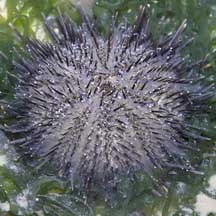
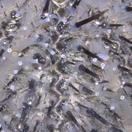
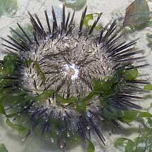
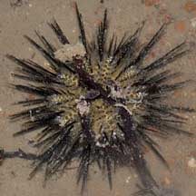

|
|
| echinoids text index | photo index |
| Phylum Echinodermata > Class Echinodea > sea urchins |
| Black
sea urchin Temnopleurus toreumaticus Family Temnopleuridae updated Apr 2020 Where seen? This black sea urchin with short spines is commonly seen on some of our Northern shores. Large heaps of many individuals are sometimes seen. At other times, there are none to be seen. Sandy areas near seagrasses as well as coral rubble and rocky shores and under jetties. Features: Body diameter 4-5cm, sometimes tiny ones about 1cm in diameter are seen among seaweeds. Short slender spines (1-2cm) with long translucent tube feet that may extend past the spines. The spines on the upperside are black and pointed. Spines on the underside are flattened and may be banded. Some have obvious light-coloured zig-zag lines radiating from the centre around the body. The sea urchin appears to 'carry' shells and other debris. This behaviour may help camouflage it or shield it from sunlight. May be confused with the Long-spined black sea urchin (Diadema sp.) which has much longer spines and is not often seen on the Northern shores. Prickly Home: Sometimes, an Urchin-mouth worm is seen curled around the mouth of the sea urchin. |
 Changi, May 05 |
 Zig-zag lines on the upperside. With long tube feet. |
 Sometimes found in large groups. Changi, Jul 04 |
|
 Underside. |
 Worm-like animal often seen around the mouth. Changi, Jun 05 |
 Carrying a shell. Changi, Aug 19 |
| Black sea urchins on Singapore shores |
On wildsingapore
flickr
|
| Other sightings on Singapore shores |
 Beting Bronok, Jun 10 |
| Temnopleurus
species recorded for Singapore from Wee Y.C. and Peter K. L. Ng. 1994. A First Look at Biodiversity in Singapore. ^from WORMS +Other additions (Singapore Biodiversity Records, etc)
|
Links
|